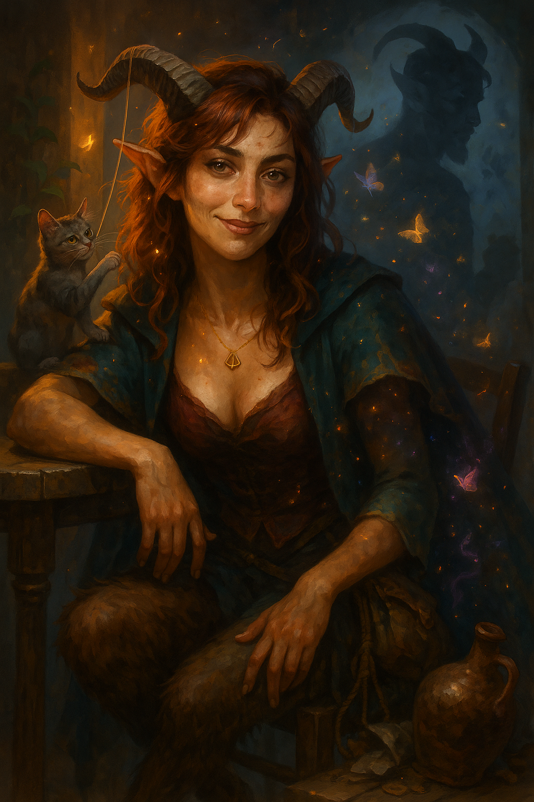

Lia Amberhorn¶

"Don't say it, I know what you think. Typical Lia. Can't read, can't count. I'm only good with cats and hard liquor. Why do you come to me for advice?"
Dyslexic Wild Magic Sorcerer Satyr who was rejected by her sober, ableist merchant family. Now she lives out the full Satyr experience: pratfalls, carouses and indulges in hiding her real talents to everybody, most of all herself. Spell snipes with pinpoint precision and cares for strays of all species.
Character Overview¶
- Species: Satyr
- Class: Sorcerer 5 (Wild Magic)
- Background: Merchant
- Age: 22
- Alignment: Chaotic Good
Quick Intro
At the Table
- Performs the entitled Sorcerer stereotype: Refuses to do anything by hand that she could use Mage hand and Prestidigitation for. Subtle Spell Catapults wine bottles and chamber pots for dramatic flair during arguments (although she sometimes snaps her fingers just for the hell of it).
- Never learned to read and count beyond the bare minimum, due to ableist parents wanting to break with the Satyr stereotypes and totally lacking patience with a daughter who functioned differently.
- Sides with the castouts, the strays, the underdogs. Harasses every cat for affection; always carries cat treats and a piece of string.
- Gifted doodler, takes notes in form of doodles and silly characters, because it's less anxiety-inducing than writing.
- Party Role: Face, Heart, glass cannon, comedic relief.
Backstory (Short Form)
Lia's family of "serious satyrs" rejected the stereotypes. They branded her dyslexia and dyscalculia as laziness, and when big money went missing from the family shop, her perfect little brother Calen laid the full blame on her. Disowned at seventeen, she's spent five years performing the full Satyr Sorcerer stereotype, as if driven by spite, or self loathing. Meanwhile, Calen is starting a merchant empire.
Playing Lia
- Combat: Glass cannon with Spell Sniper, Lucky, and Seeking Spell metamagic: the fantasy is a constantly half-drunk Satyr who surgically blasts targets at any range, ignoring Cover, while tangling her horns in tree branches or slipping in mud.
- Roleplay: Mispronounces her incantations wildly, drops her components, spills wine, and yawns through war councils. But is also a loving and wise person with great people skills and sound intuition. Optimistic about the world and other people in it; advocates for the wildest courses of action if they sound fun. But struggles with her own negative self talk about being a failure and a fuck-up.
- Party Synergy: The lovable disaster who somehow pulls off the clutch play and the big spells. Great at listening to and caring for others but constantly fails to see her own patterns.
Deep Dive
Full Backstory¶
Lia Amberhorn was born into a family of satyrs determined to scrub away every Feywild cliché. Her father, Dionel, is a sober, hard-nosed merchant. Her mother, Thyra, left revelry behind and devoted herself to austere faith (Church of Ilmater) and respectability. Together they built a reputation as "the serious Satyrs," who never touched drink and were always good on their word. Then came Lia, naturally gifted, deeply connected to the Fey. And no matter how often Dionel drilled her, the columns never lined up.
Every mistake in the shop ledger was a reminder she wasn't the merchant daughter they wanted. Thyra prayed for her discipline, but Lia's magic burst out at all the wrong moments. Books caught fire, feather pens started dancing, perfectly neutral grey bolts of cloth turned pastel. Her extraordinary magic talent was whimsical in the worst possible way, and her control flimsy at best. While her parents were never physically violent, their words and sneers cut deep.
To make matters worse, her little brother Calen was the perfect merchant son, able to track the markets and dance through the ledgers before he could even grow horns. His favorite line was, "Don't blame your Fey blood for your failures, sister. Some of us just work harder." Their sibling bond soon hardened into rivalry.
When Lia was seventeen, her parents were summoned to Feywild court business and left the shop in their children's hands. Lia did what she always did when her parents were away: Decompressed. Partied, slacked and magicked the mess away in the last hour before they returned. But this time, a vast sum of money had gone mysteriously missing from the accounts. Calen laid the blame for the catastrophe squarely on Lia.
While she knew she hadn't touched the money, she couldn't even read the ledgers to defend herself. Her protests were hollow against Calen's cool arithmetic. Dionel and Thyra finally disowned her, threw her out on the street with nothing but her chaotic magic and a chipped wine jug.
She still keeps a mental list of everyone who visited the shop that week, their faces, their voices, what they wore, in what order they came. Meanwhile, Calen runs his own trading house now, with ventures in three cities. But a part of her can't help but wonder how much Calen knows about that missing fortune.
Personality Deep Dive¶
Lia distrusts experts. Knowledge may be good, but she's only ever seen, and felt, it wielded as an instrument of harm. Leaning hard the other way has become ethics for Lia: People don't lose their value just because they aren't smart. She always remembers people's faces, has a good radar for lies and deceit, connects effortlessly to strangers, children and animals, is easygoing and kind without making a big deal of it.
But her body holds on to a more cruel assumption, that she's the botched one who was destined for the streets, the stupid girl who destroyed the good bolts of cloth with frivolous pastels. She may have solid instincts with people and a gift for reading a room, but nobody told her that's a skill that matters.
Instead she performs what her parents always accused her of being: the Wild Satyr, the Sloppy Sorcerer. She does everything with magic. Why work and open a simple door manually when you have Mage Hand? She uses her extraordinary talent for silly displays and party tricks, and tells herself this is who she really is. The wine helps her believe it, one night at a time.
Personality traits: Lia adores cats. She loves deflating overly serious situations, laughs at her own pratfalls and has a surprisingly strong sense of right and wrong for a "party girl satyr". She's been carousing hard and enjoys making friends, but she's not a heartbreaker and she's wary of committing to anything where her performance is load bearing. She doesn't want to be the cause of any more disappointment, so she's extremely clear about her noncommittal ways.
Ideals: No expectations, no anxiety, no commitments. But don't you dare to bully someone powerless; I will wreck you.
Flaws: Lia has a full playbook of strategies to avoid actually looking at her core wounds and keep operating under the assumption that the voice in her head calling her "a failure" is authoritative. She mispronounces incantations, drops components, trips over her own hooves, but the Scorching Ray still works somehow. She's an unapologetic mess, spilling wine on documents, tangling her stockings, and sleeping through meetings. Her life would crash if she forgot how to Prestidigate.
Sample Quotes¶
"Do I ever... use my chaos as a shield? Oh, definitely. Remember how I went all 'Sorry about your curtains, wild magic surge, can't control it, whoopsie' back with that snobby merchant? Yeah, that jerk had it coming."
"This amulet? Poison resistance baby. With this, I only get hangovers when I truly apply myself."
"Last night was great! Don't even remember which realm I left my smallclothes in. Classic me, right?"
"Oh, so you traded with my brother Calen? That's nice... I mean, he's very competent. Super smart and fastidious. But sometimes he just feels more... 'satyrish' than me. Did he give you a good deal?"
"Ipso! Presto! Fabuloso! Because manual labor is for dummies and the non sorcery-gifted."
"I totally had a plan, but then I turned the chandelier into butter and the innkeep is on the street shouting my name, so we're improvising!"
"Do you remember if I ate the cat treats last night? I can't find them, and my tongue tastes funny."
"You sure you want me to negotiate a discount for you with that merchant? Well... okay. One third of the price? Don't sell yourself short, you deserve at least one fourth!"
Key Relationships
- Hermeion Amberhorn: Lia's paternal uncle and everything Dionel rejected. Hermeion thinks his brother is a miserable, self-hating fool who broke his own daughter trying to play human merchant. Both Dionel and Thyra used to warn Lia about him, but he's been her champion since she was disowned. He appears with wine and promises of good times and escape, telling her she's perfect exactly as she is, that her parents are the real failures, not her.
Dionel throws legendary parties in Feywild-adjacent spaces. The wine flows, the music never stops, and for the first time in her life, Lia is celebrated for being exactly what she is. Hermeion calls her his "favorite niece," who should carry the Amberhorn name into the future, the one who understood what it meant to be Satyr. He gives her the approval she's starved for.
But Hermeion's revelry has a body count, and it makes Lia genuinely uneasy. Mortals get lured in by Fey magic and become "guests of honor" in games they never agreed to play, entertainment for creatures who don't understand (or care) that humiliation can break someone. Time moves differently there. People stumble out days later, sometimes weeks, changed in ways that don't come off in the shower. Some don't stumble out at all.
-
Calamity Carita: The Tiefling adventurer who makes Lia look tame. Every morning, Carita chops all the Tiefling stereotypes on a mirror and snorts them with a good helping of whatever central stimulants she can scrounge. Most people don't see her as aspirational, but Lia finds it oddly relaxing to be in her company. Next to Carita, she's not the weird one in the room anymore. Carita is wildly successful, never wanting for money or good times, and has already pulled Lia into several crazy quests, nudging her down the path to the adventuring lifestyle. When they're deep in their cups, Lia occasionally asks why such a big-shot adventurer keeps insisting on pulling a chaotic sorcerer screw-up like her along. Carita usually smirks and responds, "quality of life."
-
Athenia De Lanza: A methodical, brilliant wizard who specializes in solving "impossible" problems through research and logic. She's not unkind, actually genuinely warm, but she operates from the absolute conviction that every problem has a solution if you think clearly enough. She treats emotional wounds like puzzles to be solved through proper analysis. She also likes Lia a lot, ever since she ran into her on one of her research expeditions into the Feywild. She sees Lia's potential immediately and cannot understand why she won't simply... fix her problems?
"Just hire someone neutral to audit those ledgers from the week the money vanished. Either way, you'll have proof. You can move on. Sleep better at night."
"Your parents obviously didn't see you for who you are, but you're an adult now. You can speak for yourself. By not giving them another chance you also aren't giving yourself another chance."
"You have extraordinary natural magical talent. I've studied for decades to do what you do instinctively. Why do you privilege your parents' voice over mine when I'm an expert in this field? I can help you with some daily affirmations."
Lia on her side is happy to have met someone with real knowledge who isn't out to put her down. The fact that Athenia is doing the exact opposite, putting another kind of pressure on her, is both new and uncomfortable.
Notes for the DM
Dramatic Questions¶
- What does it take to motivate Lia to actually stand in her power and claim ownership of important party strategy and analysis, instead of letting others make the tough decisions while she tags along, vibing?
- What does 'success' look like for Lia? Not just 'existence as usual' but actual progress in her life?
- If Lia's parents showed up and asked forgiveness, pleading for her to come back, would she?
Key Relationship Dynamics¶
Hermeion Amberhorn: Lia sees the excesses his parties always go to, and doesn't approve. But when she's there, surrounded by beings who think her magic is beautiful instead of shameful, who laugh with her instead of at her, who never mention ledgers or responsibilities or failure... it's so hard to leave. Dionel and Thyra may be terrible parents, but they had a point about Hermeion being a bad person. He isn't secretly evil, he genuinely loves her, but his love is poison.
Hermeion can be used as temptation. Have a party go dark, excessive, have him dare Lia to use her magic in unsavory ways, like shooting apples from the heads of human "guests" with her Firebolt cantrips ("Why not? You're the best damn shot I've ever seen even when you're drunk!"). Force a moral decision from the player. Can she walk away from the only place she's ever belonged, knowing that belonging builds on frivolous kidnappings and using people as props for entertainment? If she leaves, is she accepting her parents were right in some way? If she stays, she enables the cruelty her parents warned her about. Hermeion never forces her, he just tempts her with the sweetness of his unconditional approval.
Calamity Carita: Great for actually pushing Lia out the door and into whatever adventure you're setting up for your party. Preferably, the calamity is always just two steps behind her by the time she enrolls the PCs. Think explosions, a full coven of upset Wildfire druids, a fatal case of mistaken identity at an influential Feywild court, and at least three disgruntled lovers. She's imagined as a higher level Rogue, possibly with a bit of a girlcrush on Lia (check table vibes before playing it out) and also a permission slip for Lia to just be whoever the hell she wants to be.
Athenia De Lanza: Athenia is a potent challenger and foil to Lia for some serious character roleplay. Her advice is infuriatingly adult and likely the objectively most reasonable course of action, but approaches Lia from the wrong angle. Lia's problem is about healing the voice inside her head. Lia could set things straight, audit the truth, reclaim her identity as an adult not defined by her family anymore, and all that would probably help her immensely. But being told "just act on these things, just do something" by someone who's never doubted their own worth is a classic case of a monkey telling a fish to climb a tree.
When they meet, Athenia is simultaneously blunt and sharp. She knows Lia's true qualities and holds her to a higher standard. She also knows Lia is performing her avoidance mechanisms so well she's convinced even herself. Play Athenia like a resourceful adult who is genuinely generous with her time and skill, but also a problem solver when what is really needed is a healer.
Plot Ideas¶
Calen Amberhorn Dionel wanted a shrewd merchant for a child, and in Calen he got more than he bargained for. Lia's younger brother is a ruthless merchant prince and potential antagonist: polished, philanthropic and generally admired, and secretly a Warlock of Mammon. His first assignment from his patron was to steal his family fortune. He framed Lia, pocketed the wealth and invested it into his own business. Now clad in the finest silks, with bejeweled horns and gold with an uncanny sheen, Calen commands debtors, mercenaries, and infernal "associates."
Calen bargains in souls more than goods, ties people into the service of his patron by luring them into crippling debt. He has uncanny luck in his business propositions. His debt network could easily be expanded to entangle the entire party, as the story demands. Examples: He bought the land where the Druid's grove stands and is selling lumber rights. He employs the mercenary company the Fighter deserted from. He holds contracts on the Cleric's temple's mortgage. He's bribing officials the Rogue is trying to blackmail. Make Calen's empire touch every PC's backstory so this becomes a group arc with Lia at the emotional center, not a solo spotlight that sidelines others.
Wild Magic Lull (Bottle episode) For some reason, Wild Magic isn't happening right now. Lia is temporarily reduced to opening doors manually, and using whatever magic her magic items might carry. Don't make it a big thing, just enough to allow the player to explore Lia's reaction to having a huge part of her identity pulled out from under her.
Wild Magic Storm Have Lia's powers go crazy for real. Have the player declare what they cast, then roll a D6 for what actual level the spell gets cast at. Roll Wild Magic Surge for every spell she casts an entire combat. Roll a d10 for additional Metamagic effects. Add extra effects: Lia's shadow separates from herself and runs off. The trees start meowing. Fireballs now smell of cloying vanilla and splash like curd.
Mechanical build (lv 5) and PDF download
| STR | DEX | CON | INT | WIS | CHA |
|---|---|---|---|---|---|
| 8 (-1) | 12 (+1) | 15 (+2) | 8 (-1) | 14 (+2) | 18 (+4) |
Combat Stats¶
| AC | HP | Hit Dice | Speed | Initiative | Prof. Bonus |
|---|---|---|---|---|---|
| 11 | 32 | 5d6 | 35 ft. | +4 | +3 |
Saving Throws: Constitution: +5, Charisma: +7
Proficiencies¶
Skills: Animal Handling: +5, Deception: +7, Insight: +5, Perception: +5, Performance: +7, Persuasion: +7
Armor: — | Weapons: Simple Weapons
Tools: Viol | Languages: Common, Sylvan
Feats¶
- Lucky: You have PB/LR Luck Points you can use to give yourself Advantage or another Disadvantage on a roll.
- Spell Sniper: Double the range of attacking spells, ignore cover and proximity.
Equipment¶
Dagger, Wine jug, Arcane Focus, Viol, piece of string, cat treats
Suggested Magic Items
- Periapt of Health (Uncommon, Attunement, Poison resistance; for hangover resistance)
- Circlet of Blasting (Uncommon, Cast Scorching Ray once/day, +5 to hit; Lia is a striker and an extra damaging spell never hurts)
- Bag of Tricks (Uncommon, pulls out random creature; Because it's very much Lia to randomly let a Giant Elk loose on the battlefield)
- Bloodwell Vial +1 (Uncommon, Attunement; +1 to Spell attack/Save throw DC, once/day: regain 5 sorcery points on HP recovery from hit dice; Adding attack accuracy fits Lia)
Spellcasting¶
- Cantrips: Fire Bolt, Mage Hand, Minor Illusion, Mending, Prestidigitation
- Level 1: Catapult, Mage Armor, Shield
- Level 2: Mirror Image, Scorching Ray, Tasha's Mind Whip, Misty Step
- Level 3: Fireball, Fly
📄 Download Level 5 Character Sheet (PDF)

Session Zero Considerations
Content Notes: Disability representation (dyslexia, dyscalculia), family rejection and emotional abuse, substance use as coping mechanism, themes of self-worth and internalized shame.
Representation Notes: Lia represents characters with learning disabilities. Her dyslexia and dyscalculia are real conditions that were misunderstood and weaponized by her family.
Table Tone Guidance: Lia performs tropes that require care in order not to slip into harmful stereotypes. Session Zero should establish how much alcohol, sex, and chaos the table wants, and what stays offscreen. If you're confident navigating tropes tied to sexuality and messiness without veering into caricature, then go for it. If it turns into "haha, she's easy," the table may suffer. Bottom line: Lia is built to be a chaos engine with hidden competence and genuine heart, not a license to make anyone uncomfortable.